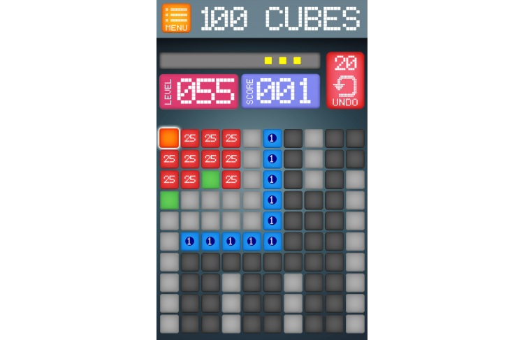
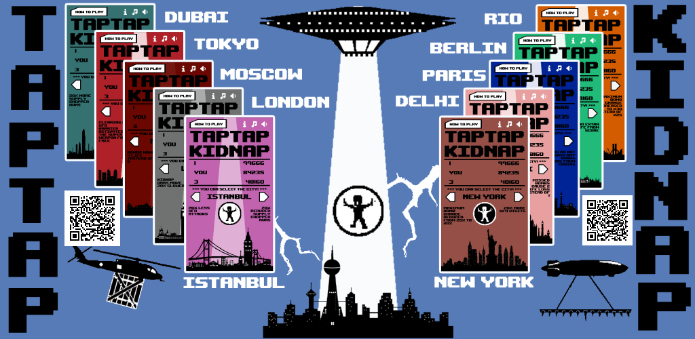

Portfolio
Personal Projects
These early independent games taught me how to turn an idea into a finished product and started my long journey with Unity.


100 CUBES
100 CUBES is a puzzle game played on a 10×10 grid. Each move follows a set of rules while narrowing the space available for future moves. It was my first published game, released for Android in 2014. Designing and coding it taught me what it really means to complete a project and turn it into a product.
Taptap Kidnap
Taptap Kidnap is a tap-heavy action game where players stop alien orbs from kidnapping peaceful creatures called Taptaps. Some orbs are traps that deploy bombs when tapped, so players must juggle those bombs until they are defused. The waves become faster and more crowded while maintaining crisp 60fps action.
I published it on iOS and Android in 2015. It was also the project where I switched to Unity, beginning a long and fruitful career with the engine.